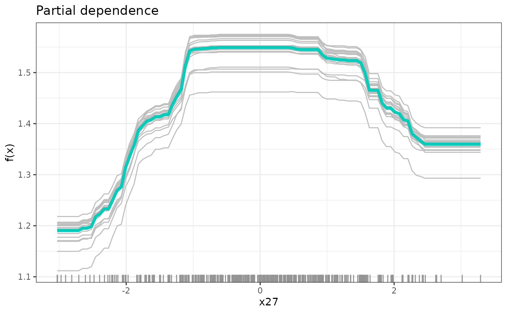

SDForest
SDForest.RmdHere, we show the functionality of an SDForest and how you can use it to screen for causal parents of a continuous response in a large set of observed covariates, even in the presence of hidden confounding. We also provide methods to asses the functional partial dependence of the response on the causal parents.
We show the functionalities with simulated data from a confounded
model with one true causal parents of
,
see simulate_data_nonlinear().
vignette("realWorld") shows an example using real data.
library(SDForest)
set.seed(42)
# simulation of confounded data
q <- 2 # dimension of confounding
p <- 350 # number of overved covariates
n <- 300 # number of obervations
m <- 1 # number of causal parents in covariates
sim_data <- simulate_data_nonlinear(q = q, p = p, n = n, m = m)
X <- sim_data$X
Y <- sim_data$Y
train_data <- data.frame(X, Y)
# causal parents of y
f <- apply(X, 1, function(x) f_four(x, sim_data$beta, sim_data$j))
# functional dependence on causal parents
plot(x = X[, sim_data$j], f, xlab = paste0('X_', sim_data$j))
# observed dependence on causal parents
plot(x = X[, sim_data$j], Y, xlab = paste0('X_', sim_data$j))
We first estimate the random forest using the spectral objective:
where is a spectral transformation. (Ćevid, Bühlmann, and Meinshausen 2020), (Ulmer?)
fit <- SDForest(Y ~ ., train_data)
fit
#> SDForest result
#>
#> Number of trees: 100
#> Number of covariates: 350
#> OOB loss: 0.33
#> OOB spectral loss: 0.01Causal parents
Given the estimated causal function, the first question we might want
to answer is which of the covariates are the causal parents of the
response. If we intervene on the causal parents, we expect the response
to change. For that, we can estimate the functional dependency of
on
,
and examine which covariates are important in this function. We can
directly compare the importance pattern of the deconfounded estimator to
the classical random forest estimated by ranger. This comparison to
the plain counterpart always gives a feeling of the strength of
confounding. If no confounding exists, SDForest() and
ranger::ranger() should result in similar models.
In the graph below, we see the variable importance
varImp() of the deconfounded random forest against the
plain random forest. The scale has no meaning, but we see how the true
causal parents in red is getting a clear higher variable importance for
the SDForest. The plain random forest cannot distinguish between
spurious correlation and true causation.
# comparison to classical random forest
fit_ranger <- ranger::ranger(Y ~ ., train_data, importance = 'impurity')
# comparison of variable importance
imp_ranger <- fit_ranger$variable.importance
imp_sdf <- fit$var_importance
imp_col <- rep('black', length(imp_ranger))
imp_col[sim_data$j] <- 'red'
plot(imp_ranger, imp_sdf, col = imp_col, pch = 20,
xlab = 'ranger', ylab = 'SDForest',
main = 'Variable Importance')
Before, we looked at the variable importance of the non-regularized
SDForest. We have two more techniques to better understand which
variables might be causally important. The first is the regularization
path regPath(), where we plot the variable importance
against varying regularization, i.e. different values. The option lets
us visualize these paths interactively to better understand which
covariates seem to have robust importance in the model.

# select 20 most important covariates for further exploration
most_imp <- fit$var_importance > sort(fit$var_importance, decreasing = TRUE)[20]
plot(path, plotly = TRUE, most_imp)The second method follows the stability selection approach (Meinshausen and Bühlmann 2010). Here, we visualize the proportion of trees in the forest that use each covariate for splits in the model. As we regularize more, only the truly causal important variables will still be used by most trees.
# detection of causal parent using stability selection
stablePath <- stabilitySelection(fit)
#plot(stablePath, plotly = TRUE)
plot(stablePath)
Causal dependence
After finding the causal parent of the response, one might be
interested in the partial functional dependence of
on the causal parents. If we want to intervene in a system, we need to
not only know where to intervene but also how to intervene in order to
get the desired response. For that, we first prune the forest to remove
any residual spurious correlation and get optimal predictive power. For
that, regPath() also contains the out-of-bag prediction
errors for different regularizations. plotOOB() visualizes
both the mean squared error (oob.MSE) and the spectral loss (oob.SDE)
that we minimize. The minimal out-of-bag error lets us choose the
optimal value to prune the forest.
# out of bag error for different regularization
plotOOB(path)
# pruning of forest according to optimal out-of-bag performance
fit <- prune(fit, cp = path$cp_min)Now, to distil the partial functional dependence of the response on
the causal parents, we use partial dependence plots in
partDependence() (Friedman
2001). For that, we vary the value of one covariate while fixing
the others to the ones that we actually observe in the data. As
representative partial conditional dependence, we plot the mean over
these individual response curves in addition to a few sample
individuals.
# partial functional dependence of y on the first causal parent
dep <- partDependence(fit, sim_data$j)
plot(dep)